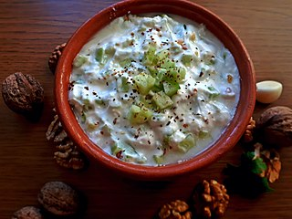

Taratur

Traditional Macedonian summer side dish
Taratur is a traditional Macedonian meal, usually served as an appetizer or salad.
It generally includes yogurt, fermented milk or sour cream, cucumbers, walnuts and garlic.
Ingredients:
- cucumber 300-500g
- 500 g sour cream, fermented milk or for more liquid version-yogurt
- 1 tsp salt
- 3 cloves fresh garlic
- 50g walnuts
- 10-20g olive oil
- parsley (for decoration - optional)
Recipe instructions:
- Wash cucumbers, then peel. Chop them finely. Put them in a bowl and add salt.
- Pour sour cream (yogurt) and add chopped garlic. Mix well.
- Add oil and crushed nuts (3/4 of them). Mix again.
- Put the mixture into a large serving bowl. Decorate with parsley and the rest of the crushed walnuts.
Serve cold. Enjoy with your ice cold Rakia.
Return to main page